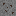
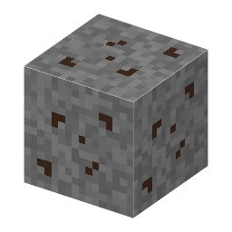

①子ども 閃亜鉛鉱が入った岩。
②学生 掘ると閃亜鉛鉱が出る。方鉛鉱と同じ高さに多い。
③大人 閃亜鉛鉱と方鉛鉱は、地下の熱い水（熱水）から一緒に沈殿してできることが多い（鉛・亜鉛鉱床）。鉄が多いと黒く、少ないと黄色や赤の透き通った結晶になる。
④ガチ 閃亜鉛鉱の結晶の形（閃亜鉛鉱型構造）は、ガリウムヒ素（GaAs）など多くの化合物半導体と同じ。Ge や Si のダイヤモンド構造の2種類の場所に、別々の元素を置いたもの。
（作り方のレシピは無い：拾う・掘る・ほかの方法）
（このアイテムを使うレシピは無い）